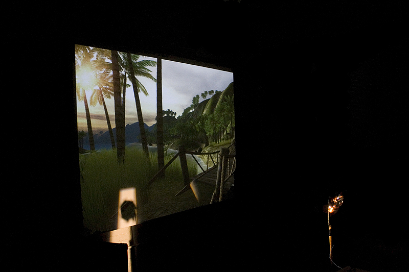
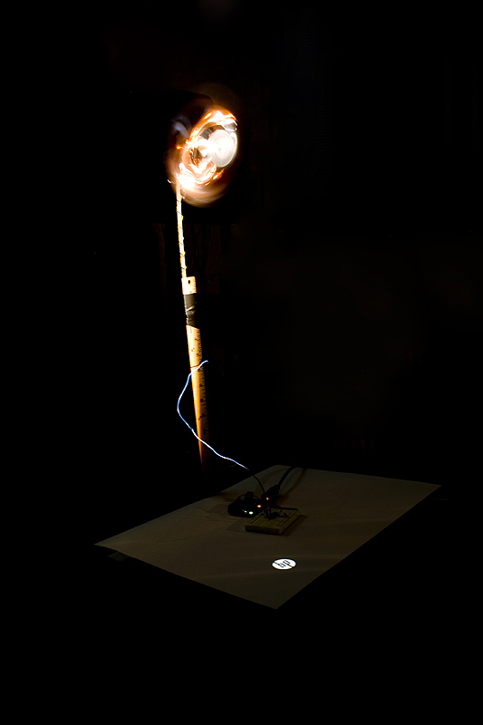
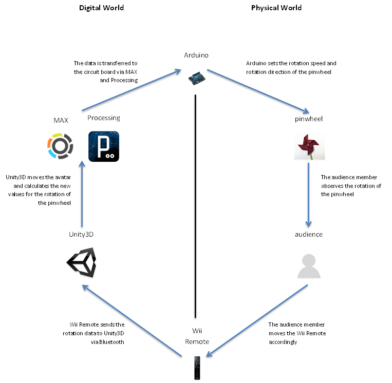
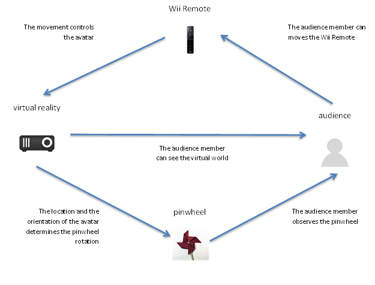
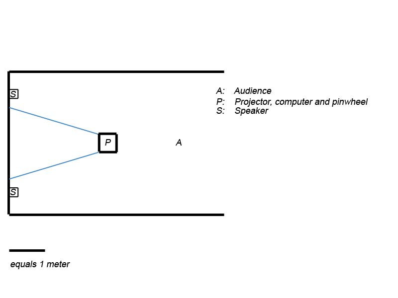

Breezes Of...
| Concept
Since leaving the hunter-gatherer society and starting agriculture, humanity has been tied to a piece of land. Even though some people travel all the time, most spend most of their time in a single place.
"Breezes of..." investigates how much the virtual reality satisfies us. The installation plays with the idea of being outdoors while being indoors within a virtual reality. The audience is presented with a first-person virtual reality that shows a natural environment such as a tropical island. A person controls the avatar in the virtual world with the Wii Remote to follow 'the path of the wind'. The virtual breeze is transferred to the real world with a motor controlled pinwheel that is if the avatar is facing the breeze fully, the pinwheel rotates in full speed with the correct rotation. The experience ends along with 'the path of the wind' by displaying the local wind information of the real world. By using 'the breeze' as a metaphor for freedom and action, the experience encourages people who prefer physical environments to see the virtual and vice versa.
Figure 1, below, is a still from the prototype installation. It shows the virtual tropical island and the motor-controlled pinwheel.
Figure 1: Still from prototype installation: The virtual world and the pinwheel
This is just one of the questions that "Breezes of..." asks. The concept of nature vs digital environments, escapism in the context of video games and the human psyche in having digital versus physical experiences are the topics that "Breezes of..."critically tries to address.
Figure 2, below, shows the pinwheel rotating with the virtual breeze in the tropical island.
Figure 2: Still from prototype installation: The pinwheel and the circuitry
Video Documentation
Technical
The system works as follows: The audience member controls his/her avatar via a Wii Remote. Depending on the avatars orientation and the location, the avatar receives more or less virtual wind. This wind decides the rotation of the physical pinwheel. Then the audience member directs his/her avatar through places that gets more virtual wind. The technical aspects of the installation can be categorized into 4 with respect to the tools employed: 1. Unity3D: Unity3D is a three-dimensional gaming engine and provides the virtual environment including the wind and the first person view. 2. Max/MSP/Jitter and Processing: Max/MSP/Jitter and Processing are only employed as a middleware for establishing a connection between Arduino and Unity3D. 3. Arduino: Arduino is a micro-controller and is used as an extension of the virtual reality to the real world. 4. Wii Remote: Wii Remote is the controller for Nintendo's motion-gaming platform Wii. It is used by the audience to control their avatars. The data flow in the system can be explained as below 1. Unity3D
2. Max/MSP/Jitter and Processing
3. Arduino
4. Wii Remote
The amount of virtual wind the avatar receives is calculated within the game engine, Unity3D and it is transferred to the Arduino board via Max/MSP/Jitter and Processing through UDP (User Datagram Protocol). Finally, Arduino adjusts the speed and direction of the rotation of the pinwheel. The user moves the Wii Remote accordingly, moving the avatar. Thus the cycle is repeated for the new pinwheel movement. Figure 3, seen below, summarizes the data flow explained above.
Figure 3: Data flow of Breezes Of...
In Figure 4, the next figure, a simplified installation diagram is seen. Instead of the internal data flow, the top level data flow is shown. Figure 5 shows a simple layout for installation within a 4 meters by 6 meters room.
Figure 4: Simplified installation diagram
Figure 5: Simple layout for installation
|
|